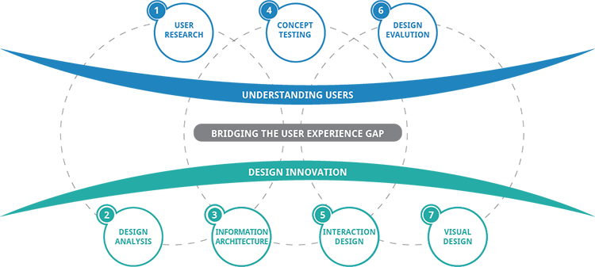

What's to Know?
Well, I'm a family man and a designer
I can work on the design process from beginning-to-end if needed. It’s valuable to be able to find a person that is comfortable doing different “jobs.” I’m a coder, I can design, I communicate well, I can research, I can market and design promotions, I understand the user, and all this is done because of my strong ability of having the right perspective on any given situation.
I design for mobile first, and create responsive websites that are geared to focus on the user experience. This user experience is built around strong business, social and content strategies.
And most importantly, I love my family. I'm a husband and father and my passion for design is rooted in them.
“People ignore design that ignores people.” @anotherny
UX Process
What does my UX process look like?
I have a range of techniques that I use in my process as a UX Designer. Mastering when and how best to use these techniques is a major goal of mine.
In each phase below, there are tons of other details, such as sketching, information architecture, wireframing, and going back to more visual designing and continual research.
